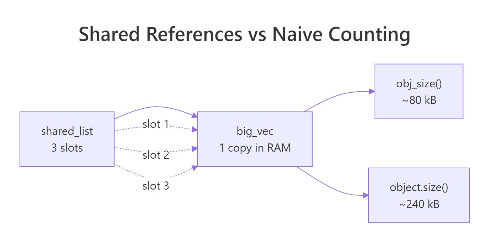
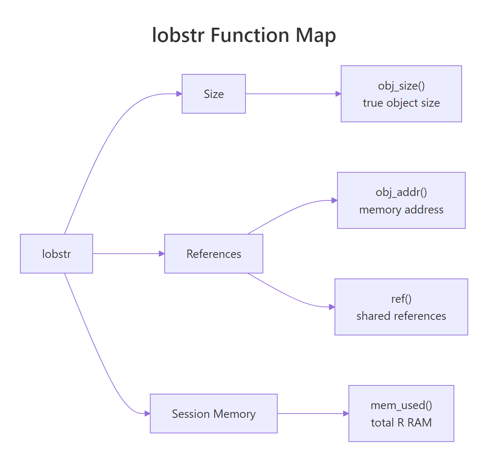
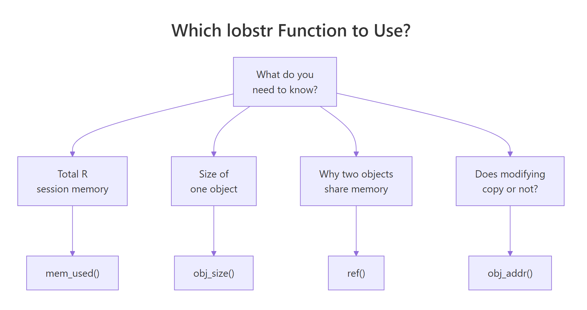

Measure R Memory Usage: lobstr Shows You Exactly What's in RAM
lobstr is the diagnostic toolkit for R's memory system: obj_size() measures true object size accounting for shared data, ref() shows which objects secretly share RAM, and mem_used() reports how much memory your session is really holding.
Why does object.size() lie about R memory?
Run object.size() on a list with repeated data and it happily reports the list uses ten times more memory than it really does. R silently shares values behind the scenes, and the built-in counter never notices. lobstr::obj_size() notices, and the gap is bigger than you would guess. Let's put them head to head on a list you would actually build.
object.size() thinks the list holds one hundred independent copies of big_vec and counts eight megabytes. obj_size() walks the list, notices that every slot points at the same underlying vector, and reports the real footprint: one copy of big_vec plus a small list of pointers. That hundredfold gap is not a rounding error. It is the difference between a memory panic and a memory non-issue.
Try it: Build ex_list <- rep(list(runif(500)), 50) and measure it with both object.size() and obj_size(). Predict the ratio before you run the code.
Click to reveal solution
Explanation: rep(list(x), 50) creates fifty slots that all reference the same vector x. object.size() multiplies the vector size by 50; obj_size() sees the one real copy.
How does obj_size() measure true object size?
obj_size() walks the object like a graph, credits each piece of memory once, and includes things object.size() misses: environment contents, attribute overhead, and ALTREP compressed representations. You can also pass several objects at once and get their combined footprint, which deducts anything they share.
The combined size equals the sum because these two data frames do not share memory. When objects do share, say, two copies of the same column assigned to different data frames, obj_size(x, y) will be smaller than obj_size(x) + obj_size(y). Always pass suspects together to get the honest answer.

Figure 1: Why object.size() and obj_size() disagree, three list slots, one underlying vector.
ALTREP is the other place obj_size() earns its keep. R can represent sequences like 1:1e6 as a compact descriptor instead of a million-integer vector, and obj_size() reports what is actually stored:
The integer sequence takes 680 bytes because R stores only the endpoints. The moment you coerce it to numeric, R materialises the full vector and eight megabytes appear out of nowhere. This is a common silent cost in otherwise innocent-looking code.
as.numeric(), arithmetic with non-integer scalars, or writing to any element will expand the compact representation. obj_size() is the fastest way to catch the switch.Try it: Pass mtcars twice to obj_size(). Predict whether the total is 2 × obj_size(mtcars) or obj_size(mtcars).
Click to reveal solution
Explanation: ex_df and ex_df point to the exact same object. obj_size() credits shared memory once, so passing the same name twice gives the same answer as passing it once.
How can you see shared references with ref()?
obj_size() tells you the total footprint; ref() shows you why it is that total. It prints a tree where each object gets a short tag like [1:0x...]. If two branches carry the same tag, they are literally the same object in RAM. Watching those tags change as you modify data is the fastest way to build accurate intuition for R's copy-on-modify rule.
Both shared_list and y start with the same top-level tag [1:0x1abc], which means R has not copied anything yet. Assignment in R is cheap precisely because it just hands out another pointer. Now let's modify y and watch the tree change.
Only the outer list and the touched slot got new tags. Every other slot in y still shares memory with shared_list. This is copy-on-modify in action: R copies the minimum it has to, not the whole object. ref() makes the minimum visible.
character = TRUE flag exposes these IDs so you can confirm string deduplication is happening.Try it: Create ex_a <- 1:3, then ex_b <- ex_a, then ex_b[1] <- 99L. Use ref() to confirm where the split happened.
Click to reveal solution
Explanation: The two names start sharing memory after ex_b <- ex_a. The moment ex_b[1] <- 99L runs, R allocates a fresh integer vector for ex_b and gives it a new ID; ex_a keeps the original.
How do you check total R memory with mem_used()?
mem_used() is a friendly wrapper around gc() that returns the total bytes your R session is currently holding. It is the "how bad is it, right now?" number, the one you check before and after a suspicious block of code to see whether it actually cost you anything.
The 40 MB jump matches expectation: 5 million doubles at 8 bytes each is 40 MB, and mem_used() reflects it. After rm(huge) plus an explicit gc(), we drop back to almost the baseline, "almost" because R holds a little padding for future allocations and does not always return memory to the OS immediately.
mem_used() for deltas inside your session, not absolute numbers from outside.Try it: Capture mem_used() before and after allocating ex_vec <- rnorm(1e6), then compute the delta.
Click to reveal solution
Explanation: A numeric vector of length one million is 8 MB because each double is eight bytes. The delta confirms that no hidden overhead is involved for a plain vector allocation.
How does obj_addr() pinpoint where a variable lives?
obj_addr() returns the hexadecimal memory address of whatever a name points to. Two names with the same address are literally the same object; two names with different addresses are two distinct objects, even if every element matches. This is the ground truth for "did R copy it?", no guessing, no heuristics.
Same address. Assignment did not copy the vector, b is just another name for the same block of memory. R tracks how many names point at each object, and as long as you do not mutate, the cost of b <- a stays at zero. Now let's trigger a copy.
The moment you assign into b, R sees that two names were pointing at the original vector and does not dare mutate it in place. It allocates a fresh vector for b, copies the contents, applies your change, and leaves a alone. The addresses now differ, and obj_addr() proved it in one line.
obj_addr() whenever you need to know whether a change will be in-place or trigger a copy, identical() compares values, obj_addr() compares identity.Try it: Create ex_v1 <- 1:5, ex_v2 <- ex_v1, modify ex_v2[5], and confirm with obj_addr() that ex_v1's address never moved.
Click to reveal solution
Explanation: ex_v1's address is identical before and after, the original vector never moved. Only ex_v2 got a new address because the write forced R to copy.
How do you diagnose memory-hungry code?
A good memory debugging workflow has three moves: take a mem_used() snapshot, run the suspect function, then inspect the return value with obj_size(). If the numbers surprise you, follow up with ref() to see where the bloat is sharing or duplicating. Here is a realistic example, a function that looks harmless but quietly carries the entire input dataset in its output.

Figure 2: The lobstr toolkit at a glance, size, references, and session memory.
bloated_stats() returns the means you asked for plus a full copy of the input, so its output is six times larger than the clean version. On 32 rows of mtcars that is nothing, but on a 10-million-row data frame the same pattern silently carries 10 million rows through every downstream step. obj_size() catches the bloat in one call, no profiler needed.
lapply() results that duplicate environments, closures that capture entire frames. Run obj_size() on the final object before you change any code.Try it: Replace mtcars with iris[, 1:4] in the call to bloated_stats() and measure the size ratio against clean_stats(iris[, 1:4]).
Click to reveal solution
Explanation: The bloat ratio depends on the input size; on iris it is about 6x. On a million-row frame the same pattern would carry the entire million rows through, the relative overhead stays fixed but the absolute waste scales with the input.
Practice Exercises
These exercises combine several concepts from the tutorial. Each one is self-contained and runs against built-in datasets, so you can solve them in the same WebR session.
Exercise 1: Rank three lists by true memory size
Build three lists that look identical on paper but differ in how much they share. Predict the ranking (smallest to largest) without running obj_size(), then confirm.
Click to reveal solution
Explanation: my_list_a and my_list_b share v across all 100 slots, so both land near 40 kB. my_list_c generates 100 independent vectors of 5000 doubles each, which lobstr counts honestly at about 4 MB. The lesson: a lapply() that ignores its index variable is identical, memory-wise, to rep(list(...), n).
Exercise 2: Write a bloat report
Write my_bloat_report(fn, x) that calls fn(x) and returns a named list with three fields: the memory delta during the call, the obj_size() of the result, and a logical shares_with_input indicating whether the result shares any memory with x. Test it against bloated_stats from earlier.
Click to reveal solution
Explanation: The trick is that obj_size(x, result) deducts shared memory, while obj_size(x) + obj_size(result) double-counts it. If the combined figure is smaller than the sum, the result is holding pointers into the input. For bloated_stats, it is, the returned list literally contains df.
Complete Example
Let's put everything together. We will profile a small data pipeline end to end: baseline, work, final snapshot, summary table. The task is a summarise-by-group on the starwars dataset from dplyr, done two ways, once correctly with summarise(), once wastefully by joining the summary back onto the full table.
Three numbers tell the whole story. sw_summary is 2 kB, a lean aggregate you can hand to a downstream step without worry. sw_join_summary is 58 kB, bigger than the raw data, because it is the raw data plus three new columns. If the downstream code only needs per-species means, the join version is pure waste. obj_size() caught it immediately. The mem_used() delta is small because most of sw_join_summary's content shares rows with sw_raw, exactly the kind of shared-memory win obj_size() is designed to credit.
Summary
The four lobstr functions below are all you need for day-to-day R memory work. Pick them by the question you are asking.

Figure 3: Pick the right lobstr function for the question you are asking.
| Function | What it measures | When to use it | Gotcha |
|---|---|---|---|
obj_size() |
True size of one or more objects, crediting shared memory once | Before committing to a data layout; after a suspicious transformation | Pass several objects together to see shared savings |
ref() |
Tree of memory IDs for one or more objects | When you need to see what is shared and what is not | Output grows fast on deep structures, print small samples |
mem_used() |
Total bytes currently held by the R session | Diff before and after a block to measure real cost | Will not match OS reporting; take deltas only |
obj_addr() |
Hex address of the object a name points to | Prove whether two names share memory or a change triggered a copy | Address changes are the ground truth for copy-on-modify |
The overarching rule: R shares data by default, and your memory tools must account for that sharing. Base R's object.size() does not, which is why its numbers can be wildly misleading on lists, environments, and ALTREP objects. lobstr gives you the X-ray view those situations demand.
References
- Wickham, H., Advanced R, 2nd Edition. Chapter 2: Names and Values. Link
- lobstr package reference, Visualize R Data Structures with Trees. Link
- CRAN: Package lobstr. Link
- tidyverse blog, lobstr 1.0.0 release announcement. Link
obj_size()function reference. Linkmem_used()function reference. Link- R Core Team, Writing R Extensions, memory usage notes. Link
Continue Learning
- R Names & Values, how R stores variables and the copy-on-modify rule that makes
lobstr::ref()output click. - R Assignment Deep Dive, the difference between
<-,=, and<<-, and why assignment never copies. - Strategies to Improve and Speed Up R Code, performance tuning patterns that pair naturally with memory diagnostics.